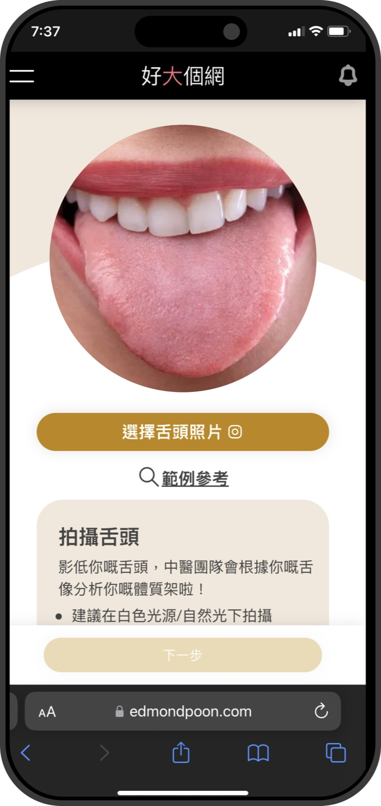
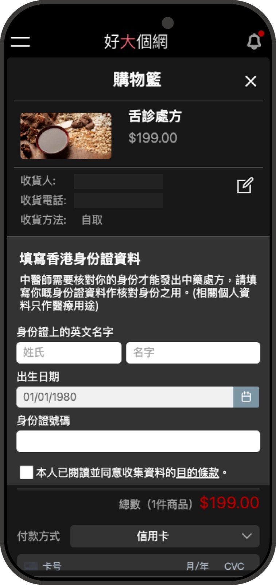

Taking tongue diagnosis beyond the clinic.
Read Tongue Online had to move a practitioner-led service beyond the clinic without reducing it to a photo upload. As the Product/UX Designer, I designed the journey across patients and registered TCM practitioners — from guided capture and follow-up questions to diagnosis, prescription and continued care.
Explore the screen-flow libraryThe problem
Tongue diagnosis depends on observation and follow-up questions, not an image alone. Moving it online creates two linked risks: patients may submit unusable photos, while practitioners may not have enough context for a responsible assessment. The service also has to carry trust through waiting, identity checks, prescription and follow-up.
How might patients complete the right steps remotely while registered practitioners stay in control of every clinical decision?
What I did
Modelled the two-sided service
- Mapped one connected journey from registration and photo intake to practitioner review, targeted questions, diagnosis, prescription and follow-up
- Designed status and email handoffs so patients always know what is happening, who acts next and when to return
- Connected both portals through shared case states, patient history and previous tongue-diagnosis records
Protected the quality of clinical input
- Guided photo capture with lighting, framing and full-tongue instructions, plus retake and file-upload alternatives
- Let practitioners choose the relevant questionnaire, review the answers, compare history and edit the analysis before sending it
Designed trust and continuity
- Surfaced practitioner credentials and explained identity verification at prescription checkout in the context of patient protection
- Extended the journey beyond one report with prescription follow-up, repeat-photo prompts and side-by-side history for ongoing assessment
Designing trust at both ends of care.
Guidance improves the evidence going in; clear identity and prescription context protect the decision coming out.


The outcomes
- Live end-to-end service — one journey now links image intake, practitioner questioning, diagnosis, prescription and follow-up
- Clinical control stays explicit — registered TCM practitioners select the questions, assess the evidence and send the final analysis
- Continuity is built into the product — past records, repeat-photo prompts and follow-up turn a one-off report into an ongoing care loop